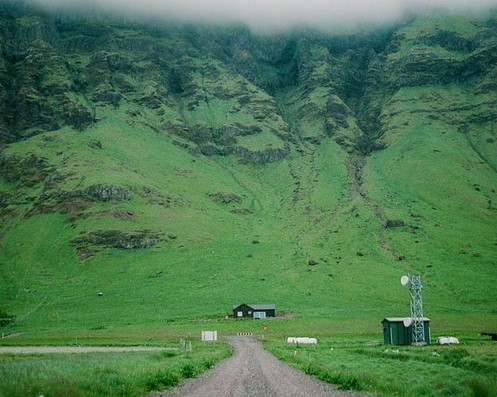

Travel is the movement of people between distant geographical locations. Travel can be done by foot, bicycle, automobile, train, boat, bus, airplane, ship or other means, with or without luggage, and can be one way or round trip.
Various types of travers and travellings.
About me